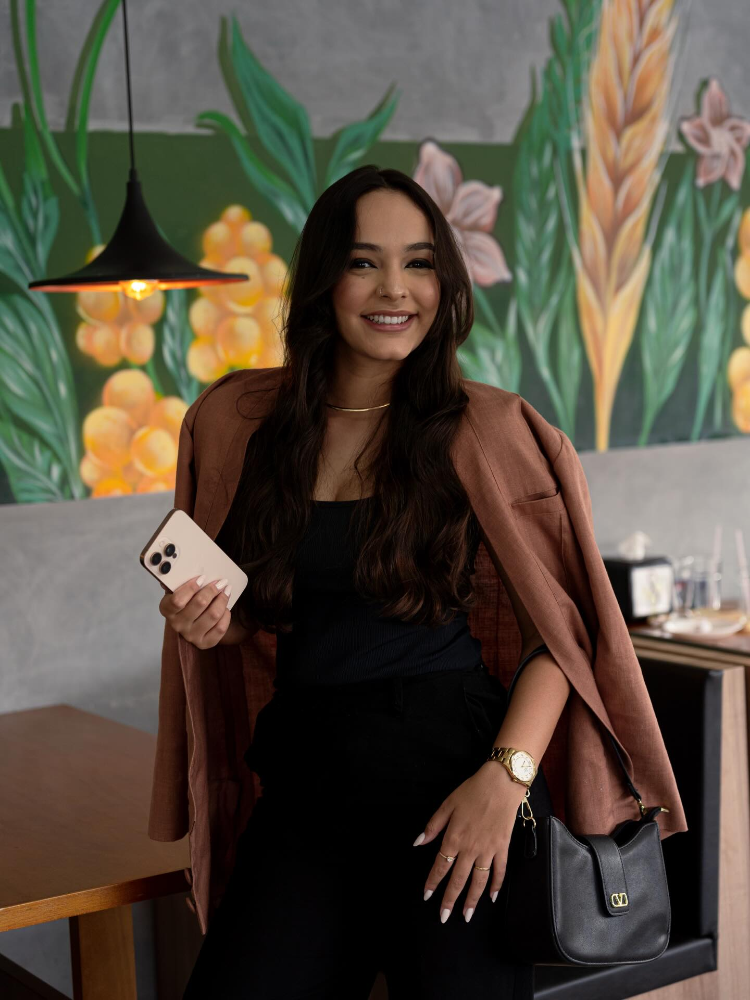

COBERTURA MOBILE · JUNDIAÍ/SP
COBERTURA MOBILE · JUNDIAÍ/SPOI, PRAZER
Oi, eu sou
a Giulia.
Faço a cobertura mobile e em tempo real de casamentos e eventos em Jundiaí e região, registrando os detalhes, a emoção e os momentos que merecem ser vividos por inteiro.
CASAMENTOS · EVENTOS · JUNDIAÍ/SP
O instante
passa. A história
fica.
Cobertura mobile, em tempo real — para reviver cada detalhe enquanto a história acontece.
Falar no WhatsApp ↗
01 / OLHAR AUTORAL GIULIA · STORYMAKERPRESENÇA, SENSIBILIDADE
E UM OLHAR ATENTO.
E UM OLHAR ATENTO.
02 — EM MOVIMENTO
Feito para sentir.
Pequenos recortes.
Memórias inteiras.
Quatro recortes de trabalho, em reprodução silenciosa e em loop. Os controles permitem pausar ou ativar o som.
03 — FRAMES FAVORITOS
Um pouco de mim.
Toque em uma imagem
para ampliar.
Registrar cada detalhe com sensibilidade é o que move o meu trabalho.
04 — SUA HISTÓRIA COMEÇA AQUI
Vamos fazer
isso acontecer?
Com carinho, Giulia.